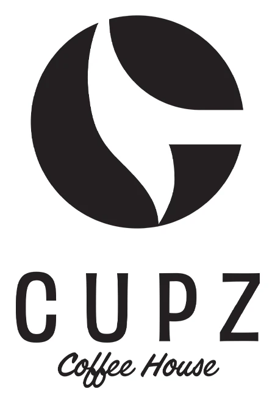

Sip, relax and enjoy
One bean, one line
A neighborhood coffee house with a strictly monochrome identity: a single disc, a single curved cut, and a name set in wide, unhurried caps. No gradients, no second color, no noise. The whole brand fits on a cup sleeve and never needs more.
01 · The mark
A bean, split by steam
The mark is a near-black disc divided by one S-curve of negative space. Read it two ways at once: a coffee bean seen head-on with its center crease, and a rising wisp of steam curling off a fresh cup. The right edge breaks open, letting the disc double as the letter C.
The curve does all the work. One gesture carries the bean, the steam and the initial letter. Because the mark is a single flat color, it survives any surface: a paper cup, a window decal, a social avatar at favicon size. Our reading of the construction, not the designer's own account.
02 · The lockup
Engineered caps, human script
Under the mark, CUPZ is set in wide-tracked caps with open, rounded letterforms, engineered and calm. Beneath it, "Coffee House" is written in a loose hand script. The pairing is the brand's whole personality: the discipline of a well-run bar, signed by hand.
03 · Color
Strictly monochrome
The identity publishes in one ink on one paper. Seasonal photography brings whatever color a campaign needs; the brand itself never does. Values sampled from the brand's published artwork.
04 · In use
The mark meets the doodle band
On the house cup the identity gains a second voice: a hand-drawn doodle band wrapping the rim, coffee icons and faces in the same single ink, with the bean mark on the cup body. The photograph is from the brand's own page cover, shown as the identity applied, not as campaign work.
05 · The signature line
The brand's own bio line, quoted exactly. Three verbs, no punctuation, no hurry: the whole brief of a neighborhood coffee house in five words.
Scope notes
- Documented on this page: the bean mark, the full lockup, the monochrome palette, the signature line, and the identity applied on the house cup.
- The source for every asset is the brand's own public Facebook page, which the owner named as the identity source: the profile picture served by Facebook at 1080px, the page bio line, and the page cover photograph showing the cup.
- Cupz is documented as a branding project only. No social media work window exists for this brand, so no social posts are shown.
- No vector files or brand guidelines exist in the documented material; the construction reading of the mark is our study of the published artwork, not the designer's own account.
- Colors are sampled pixel values; Ink and Paper are descriptive names, not official brand names.
- The reversed cards are the same published artwork inverted for legibility on dark, not a second brand file.
- The cup photograph is a detail of the brand's page cover, used as evidence of the identity in use; the cover artwork's authorship is not documented.